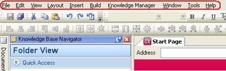

This category groups all the options that belong to the GeneXus MenuBar. 
|
| Sub Categories | ||
| Category:Build Menu | Category:Edit menu | Category:File menu |
| Category:Insert menu | Category:Knowledge Manager Menu | Category:Layout menu |
| Category:Tools menu | Category:View Menu | Category:Window Menu |